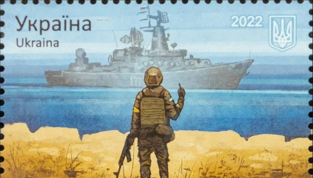
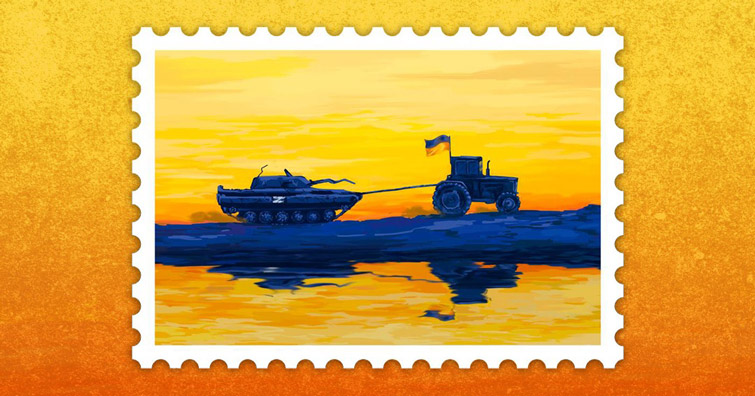
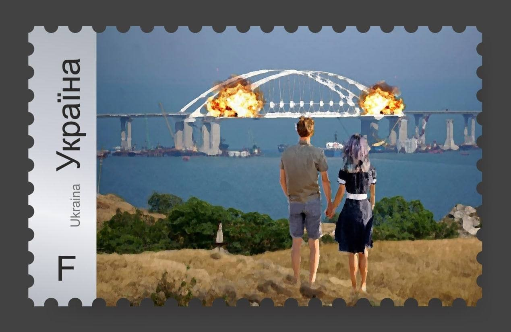

"Шановні клієнти, у зв’язку з великим ажіотажем навколо марки «Русскій воєнний корабль, іді …!» та щоб забезпечити можливість якомога більшій кількості людей придбати пам’ятну марку, Укрпошта вводить обмеження на купівлю марок", - йдеться у повідомленні.
Нова марка від Укрпошти "Доброго вечора, ми з України".
Усього планують випустити 5 млн екземплярів марки з трактором, однак діятимуть обмеження на її продаж.
